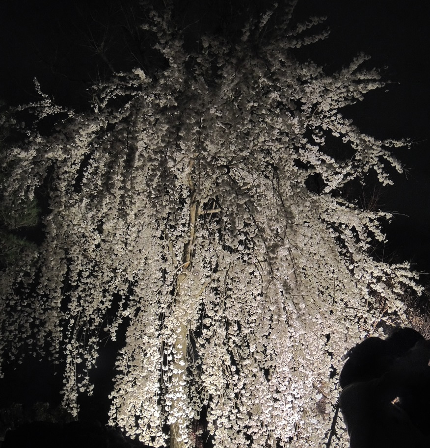

春天賞櫻是日本傳統習俗之一，自日本平安時代皇族、達官顯貴等的春季踏青活動開始，至今有1千多年的歷史。
櫻花盛開季節，賞花的人們聚集在賞櫻名勝，或是踏青，或是參加熱鬧的櫻花節，在櫻花樹下舉杯暢飲最為平常。
日本櫻花花期由沖繩開始，早在1月就開花，北海道最晚，要等到5月，南北之間主要城市的盛開日集中在3月及4月。
每個地區從花開到花謝只有7至10天，氣候轉變，下雨以及刮風都是影響櫻花開花及花謝的原因。為了延長賞櫻的時間，許多日本賞櫻名所開放夜間賞櫻。
日本全島由北至南，賞櫻名所不計其數，一般遍布於各地的古城、古寺、公園或是街道，每處櫻花風情都不一樣。
.d88888888bo.
.d8888888888888b.
8888888888888888b
888888888888888888
888888888888888888
Y8888888888888888
,od888888888888888888P
.'`Y8P'```'Y8888888888P'
.'_ ` _ 'Y88888888b
/ _` _ ` Y88888888b ____
_ | / \ / \ 8888888888.d888888b.
d8b | | /| | /| 8888888888d8888888888b
8888_\ \_|/ \_|/ d888888888888888888888b
.Y8P `'-. d88888888888888888888888
/ ` ` `Y8888888888888888
| __ 888888888888888P
\ / ` dPY8888888888P'
'._ .' .' `Y888888P`
`"'-.,__ ___.-' .-'
`-._```` __..--'`
回到最上層